AF2BIND: predicting small-molecule binding sites using the pair representation of AlphaFold2
Abstract
AbstractIdentification of small-molecule binding sites in proteins is an important task for drug discovery. Despite previous homology- and machine-learning-based approaches to this problem, true de novo binding-site prediction remains a challenge. Here we use features from a pretrained neural network to train a logistic regression model, AF2BIND, for accurate prediction of de novo binding sites. AF2BIND identifies binding sites without relying on homology modeling, multiple sequence alignments or knowledge of a pocket-compatible ligand. Interpretable aspects of the model can be used to predict chemical properties of compatible ligands. We apply AF2BIND on the human proteome to produce a database that includes thousands of unseen binding sites in disease-relevant proteins. We anticipate AF2BIND will be used to focus drug discovery efforts and uncover functional sites in proteins across the tree of life.Subject terms: Machine learning, Drug discovery, Protein function predictions, Cheminformatics
Main
Accurate prediction of ligandable sites in proteins remains an outstanding challenge1. Though some methods take advantage of homology to transfer binding-site annotation between proteins based on structural similarity2–4, true de novo binding-site prediction remains difficult. In particular, the task of predicting small-molecule binding sites remains challenging. Such a capability could generate novel functional hypotheses across whole proteomes or focus drug discovery efforts.
Several approaches have been proposed to tackle the problem of small-molecule binding-site prediction, ranging from empirical pocket finding using probe spheres5,6 to more abstract deep neural networks trained from scratch7–10. Traditional pocket finders like fpocket6 or P2Rank5 use alpha spheres or solvent-accessible probe points to detect pockets. In the case of P2Rank, which is perhaps the most widely used binding-site predictor, probe points are ranked by a random forest classifier that considers many biophysical features such as burial to determine the probability of belonging to a druggable pocket. On the other hand, neural networks trained from scratch to predict binding sites must build up a useful numerical representation of the problem to accurately classify binding sites using only limited training data, a challenge that could result in overfitting and weak generalization.
We reasoned that neural networks trained on seemingly orthogonal tasks to small-molecule binding, such as protein structure prediction, masked token prediction or structure-conditioned sequence design could provide rich, transferable features for the binding-site prediction problem. Using weights from a pretrained model has the added benefit of the representations deriving from a sizable increase in training data. For example, models like ESM2 11, ESM1-IF12 and AlphaFold2 13 (AF2) were trained on hundreds of thousands to millions of protein structures and sequences, far exceeding the number of available nonredundant, experimentally determined small-molecule binding sites. While the abstract features derived from these models might lack the physical interpretability of the more traditional features used for binding-site prediction (such as residue burial and polarity), their use could nevertheless help to generalize performance on binding-site prediction, surpassing more traditional predictors in some instances, especially for non-canonical sites where pockets are ill defined.
Sequence-based models might do well to detect binding sites via conservation and covariation, yet small-molecule binding sites are often found in ‘frustrated’ regions of a protein14,15, where the local structure and sequence are in conflict. Models that predict sequence from structure might therefore do well to recognize such sites. Models such as ESM1-IF or proteinMPNN might detect pocket-like structural features or infer identities of buried polar residues learned from training. We reasoned that a structure prediction model, such as AF2, might similarly detect such properties while also providing an additional channel to identify binding sites through pairwise attention between frustrated regions of a target protein and additional amino acids provided for ‘co-folding’. If we could extract this additional attention signal, AF2 might then offer a rich embedding for the binding-site prediction task.
A body of work has suggested that protein–small-molecule contacts can be sufficiently approximated by protein–amino-acid contacts16–19. For example, the concept of a van der Mer (vdM), a protein structural unit that relates the main-chain coordinates of a residue to statistically preferred positions of an interacting chemical-group fragment, has been used to design small-molecule binding proteins from scratch (Extended Data Fig. 1)16–18. In practice, chemical fragments are derived from amino acids themselves, and vdMs are compiled from inter- and intra-protein interactions to increase the number of observed interactions. While many drugs contain non-natural functional groups (for example, fluorocarbons), the use of protein–amino-acid interactions to model protein–small-molecule interactions is justified because many small molecules have functional groups that can be closely approximated as those from amino acids. Indeed, a Morgan fingerprint analysis of the ~40,000 chemicals in the PDB shows that on average a molecule has 50% amino-acid character (Extended Data Fig. 2). Furthermore, an analysis comparing vdMs with protein–small-molecule interactions showed that the geometric distributions of the former could accurately describe the geometries of the latter19.
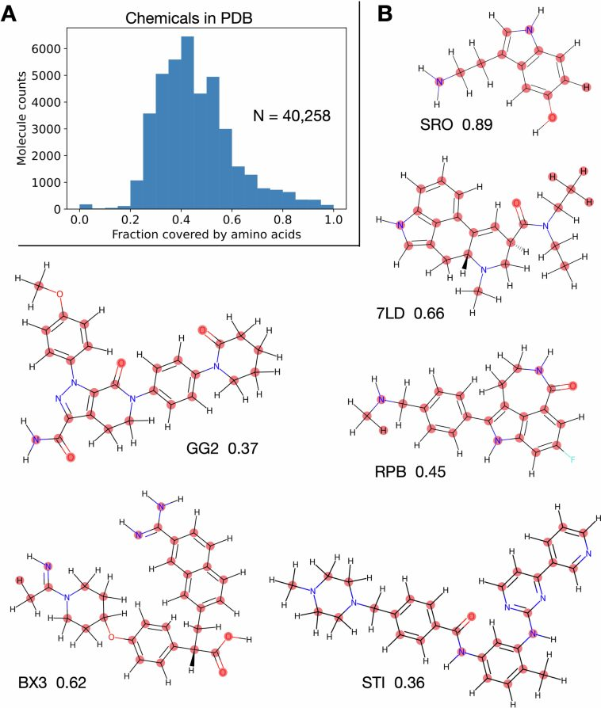
Because protein intramolecular contacts can closely approximate some protein–small-molecule contacts16,17,19, we reasoned that individual ‘bait’ amino acids could be supplied to AF2, in conjunction with the template of a protein target (either from the protein databank (PDB) or predicted), to tease out the small-molecule-binding signal. The ‘bait’ might allow AF2 to alleviate regions of frustration in the target template (‘finish folding’20), and binding-site prediction would then proceed by tracking what AF2 does with this bait. Here, we show that AF2’s internal representation of protein structure and sequence is sufficiently expressive to train a logistic regression model, AF2BIND (AF2 bait-informed neural descriptor), to accurately predict small-molecule binding-site residues in proteins, without multiple sequence alignments, homology models or knowledge of the true ligand. We further show that AF2BIND can be used to compute ligand polarity compatible with a binding pocket. Finally, we use AF2BIND to predict binding sites across the AF2-predicted human proteome21, finding thousands of potentially new sites missed by homology modeling and P2Rank.
Results
AF2BIND is a logistic regression model using AF2 features
AF2BIND is a logistic regression model trained from AF2 pair features to predict each residue’s probability of contacting a small-molecule ligand, given a target protein structure (Fig. 1). The goal in our development of AF2BIND was to understand if features derived from AF2 provide a richer description for the small-molecule binding-site prediction task than previously used models. AF2 has already been used in predicting protein–protein and protein–peptide structures22–24, but it is less clear whether it could be useful for predicting small-molecule binding sites because small molecules are not explicitly modeled or accounted for in the training objective. Still, AF2 was trained on proteins that contain small molecules, and it sometimes even predicts the correct rotamers for binding, for example in metal or heme sites13, so some nuanced binding signatures might be embedded in its features that could be used to train a model for binding-site classification. Given that AF2, trained only on monomeric protein structures, can accurately predict protein–peptide co-structure with no co-evolutionary information of the peptide (and no examples in the training set)22–24, we reasoned that AF2 might also be useful for predicting small-molecule-binding sites, which often locally resemble amino-acid sidechains16 (Extended Data Figs. 1 and 2).
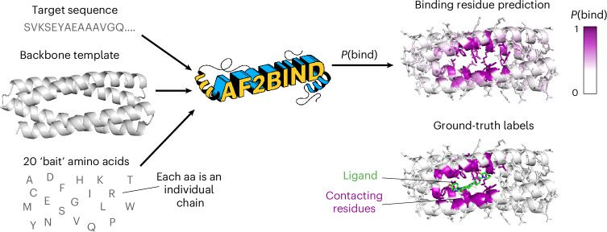
We set out to train a binding-site prediction model that was maximally interpretable, with few operations that transform the AF2 embeddings. We chose a logistic regression model trained directly on AF2’s pairwise representation, which assigns a tensor to each pair of amino acids in an input sequence that is used to predict the relative position of these residues in the structure (Fig. 2a). We give AF2 the sequence of the target protein and its backbone structure as a template (we do not supply AF2 with a multiple sequence alignment). To allow AF2 to ‘finish folding’ the template protein, we also provide 20 disconnected ‘bait’ amino acids as individual chains, by appending these to the target sequence with large (50) residue offsets between each. Each of the canonical 20 amino acids is used. Instead of using multiple recycles, as is common for structure prediction, we only compute a single pass through the AF2 model to generate the pair representation. Our motivation is to extract the initial attention between target and ‘bait’ sequence, unbiased by arbitrary placement of ‘bait’ amino acids by the structure module. The pairwise embeddings between each of the 20 bait amino acids and a target residue are concatenated and fed into the logistic regression model for training, with the objective to predict the label for the target residue (1 or 0, whether it is a binding residue or not; Fig. 2a). AF2BIND thus takes a target sequence and backbone structure and computes a probability, P(bind), for each residue to participate directly in a small-molecule binding site (Fig. 1 and Methods). In addition to the per-residue binding-site prediction, the interpretable nature of the logistic regression model allows us to identify which bait amino acids are contributing to the sigmoidal activation of P(bind) (Fig. 2b).
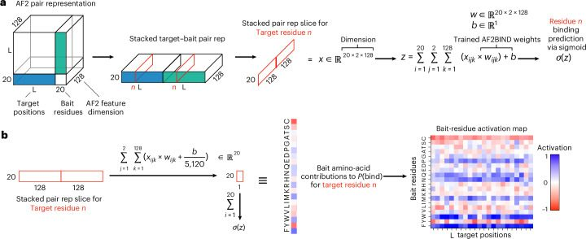
Training of AF2BIND
To train AF2BIND, we created a rigorously split dataset of single-chain (<500 amino acids) protein–small-molecule complexes curated from the entire PDB. The split was based not only on sequence but also on fold, evolutionary classification and binding pocket similarity. This rigorous split is important for the binding prediction task because binding sites are highly conserved in proteins, even if the overall sequence diverges25,26. Our motivation was to prevent any leakage of the training data into the test data so we could accurately determine the ability of the model to generalize for de novo binding-site prediction. After creating this split, we found that regularization was still needed to keep from overfitting the model (Extended Data Fig. 3).
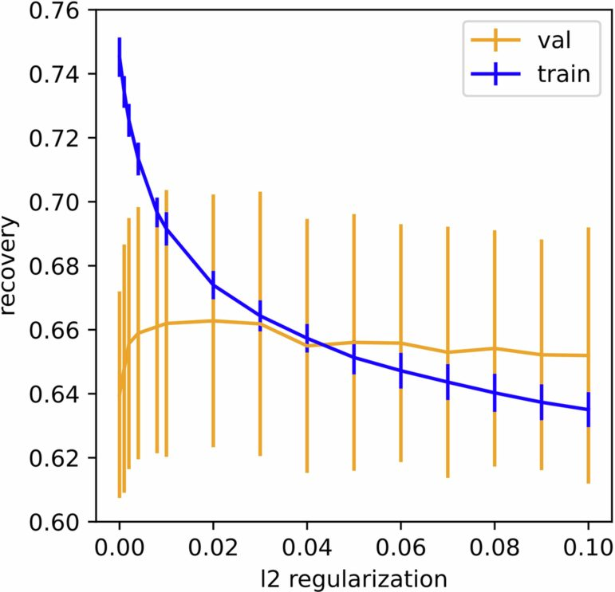
AF2 provides superior embeddings for binding-site prediction
Direct comparison of AF2BIND to other small-molecule binding-site predictors is challenging because most published train–test data splits contain considerable amounts of data leakage1,25,27,28. Instead, we compare the performance of different representations from various pretrained models for the binding-site prediction task on our train/test split. Our test set consists of 67 structures of diverse small-molecule binding proteins that share no structural, sequence or pocket similarity to any protein in the train or validation sets (see ‘Dataset’ and ‘Training’ sections in Methods for details). We compared the performance of AF2BIND with the single-representation features from AF2 13, ESM2 11 and ESM1-IF12 for just the target sequence or structure (no bait amino acids were included). Recently, ESM2 and ESM1-IF representations were used for binding-site prediction on a different train/test set29–31. We find the pair representation of AF2 outperforms these other representations for the small-molecule binding-site prediction task (Fig. 3 and Extended Data Fig. 4).
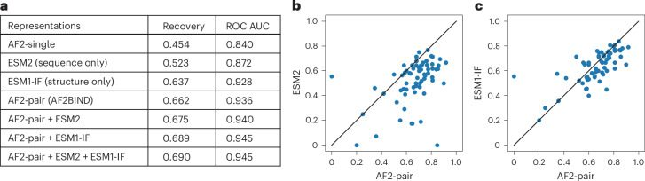
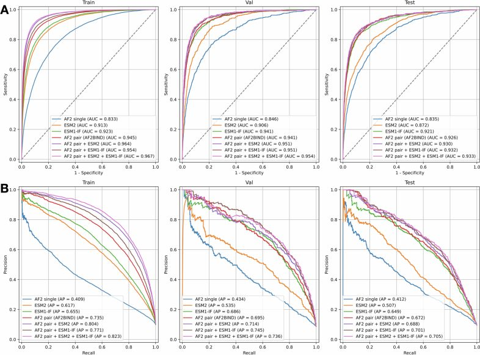
To assess model performance, we compute binding-residue ‘recovery’, the fraction of binding-site residues recovered from the top predictions, sorted by highest to lowest P(bind) (Methods). While the pair representation of AF2 provides the best singular embeddings for the binding-site prediction task (Fig. 3), a combination of AF2-pair and ESM embeddings provides the best metrics for recovery and receiver operating characteristic area under the curve (ROC AUC, Fig. 3a). The average recovery for binding-residue prediction was 66% for AF2-pair representation (AF2BIND) and increased only slightly to 68% and 69% when combined with ESM2 and ESM1-IF, respectively. We provide weights for the combined models in GitHub, but focus here on the AF2-pair representation, due to the interpretability of the bait residues in activation analysis and because the AF2 pair representation performed similarly to the combination models.
AF2BIND is well calibrated: the classifier threshold is roughly equal to the miss rate (1 – recall). For example, a classifier threshold of P(bind) = 0.1 misses approximately 10% of true binding residues, a threshold of 0.5 misses about 50%, and 0.9 about 90% (Extended Data Fig. 5). We use a threshold of 0.28 based on the Matthews Correlation Coefficient and F1 metric averaged across the ten cross-validation folds (validation sets). This threshold has a mean recall/sensitivity of 67%, false positive rate of 4.3% and precision of 63%. Performance on individual proteins across train, test and validation sets shows high specificity and sensitivity at this threshold (Extended Data Fig. 6). For the task of de novo binding-site prediction across entire proteomes (see below), we require a low false positive rate because the expected label distribution is imbalanced (for example, only 10% of residues in the training set are binding residues). The mean MCC/F1 threshold satisfies our requirements of high recall and precision.
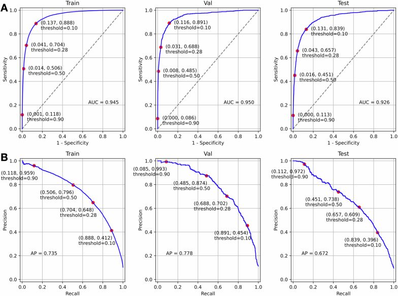
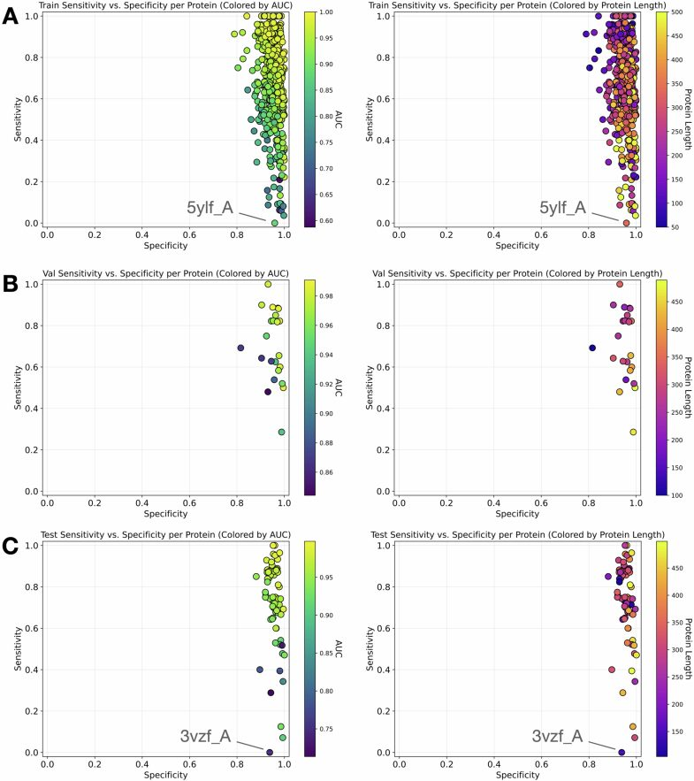
Exemplar performance of AF2BIND on held-out protein classes
AF2BIND can accurately predict binding residues of rigorously held-out protein classes. We held out G-protein coupled receptors and bromodomains (as well as other classes) from training and validation, based on sequence similarity and structural similarity (Methods). AF2BIND confidently predicts the binding residues of these proteins (Fig. 4). Not every residue in the binding site is predicted with equal probability, providing a hierarchy of residues most likely involved in binding a small molecule. This ranking scheme gives additional information over volumetric pocket-finding algorithms6,8, as it suggests which residues might preferentially engage a ligand. P(bind) is not trivially correlated with conservation (Extended Data Fig. 7), as shown by the low conservation in the orthosteric binding site of the mu opioid receptor relative to the more conserved intracellular core and G-protein-binding regions (Extended Data Fig. 7c,d). Furthermore, slight variations in the protein backbone lead to reproducible predictions (Extended Data Fig. 7b). For example, four structures of the human mu opioid receptor were compared, with average backbone root mean square deviation (RMSD) of 0.7 Å. The spread (s.d.) in P(bind) for each residue was very low (0.02), and the variance did not correlate with the magnitude of P(bind). Because we mask the sidechain dihedral angles of the input template of the target protein, AF2BIND is insensitive to the sidechain rotamers of the target protein, which is advantageous if the rotamers are uncertain (common for predicted protein structures). Indeed, we found that masking the sidechain dihedrals of the holo structures during training led to equal (or even slightly better) predictive power (recovery) of the model, relative to a model trained with the additional sidechain information given to AF2 (Extended Data Fig. 8). Because one of the most common differences between unbound and bound structures of proteins is the change of a rotamer in a binding-site residue32, this insensitivity to sidechain coordinates should prove beneficial when analyzing unbound or ambiguous structures. Moreover, changes in backbone coordinates between unbound and bound states are on average small (RMSD < 1 Å), within the range where predictions by AF2BIND are robust.
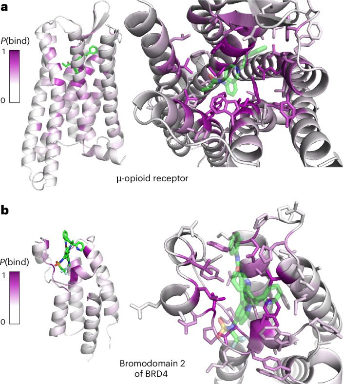
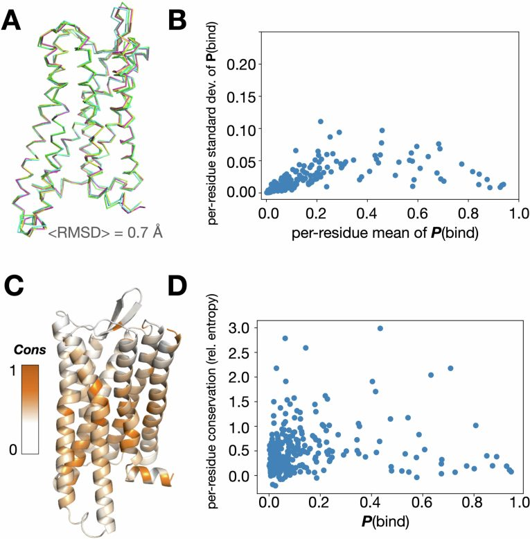
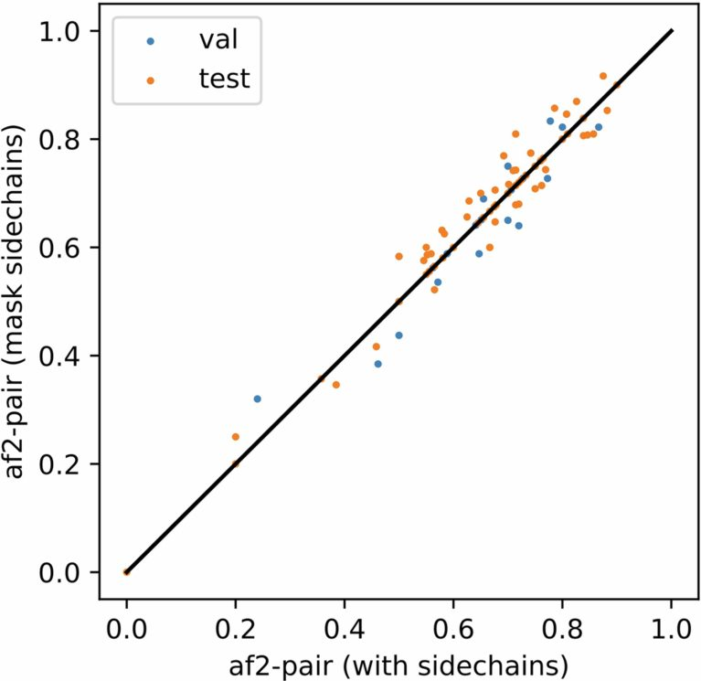
To probe further the sensitivity of the model on backbone, we tested AF2BIND on a set of proteins that display larger-scale changes in backbone conformation upon binding. We used the Binding MOAD (Mother Of All Databases) database32 of matched apo/holo structures to find unbound and bound pairs of identical proteins with Cα RMSD greater than 1 Å and less than 3 Å. We grouped matched pairs by family and chose a representative pair from each with the highest Cα RMSD. The resulting ten pairs show a high Spearman correlation in P(bind) and similar recovery, showing that AF2BIND is robust to larger structural changes that are sometimes associated with small-molecule binding (Supplementary Table 1).
We next performed an analysis on three proteins that undergo very large-scale (>3 Å) structural changes between bound and unbound states. AF2BIND showed similar high recovery on both bound and unbound states of adenylate kinase, maltose-binding protein and calmodulin, despite the massive changes in structure after binding (Extended Data Fig. 9). While these results are encouraging, we note that AF2BIND was not as successful at recovering binding residues in cases of binding-site collapse in the unbound state, as in the cryptic site in β-lactamase (Extended Data Fig. 10). Here, a helix, which moves outward to expose a pocket in the bound state, is packed against the protein in the absence of the ligand. Consequently, AF2BIND does not predict the residues of the helix in the unbound state as ligand binding. In summary, AF2BIND shows a remarkable amount of robustness to structural changes, but might struggle in structures that harbor collapsed binding sites, a case outside its training regime.
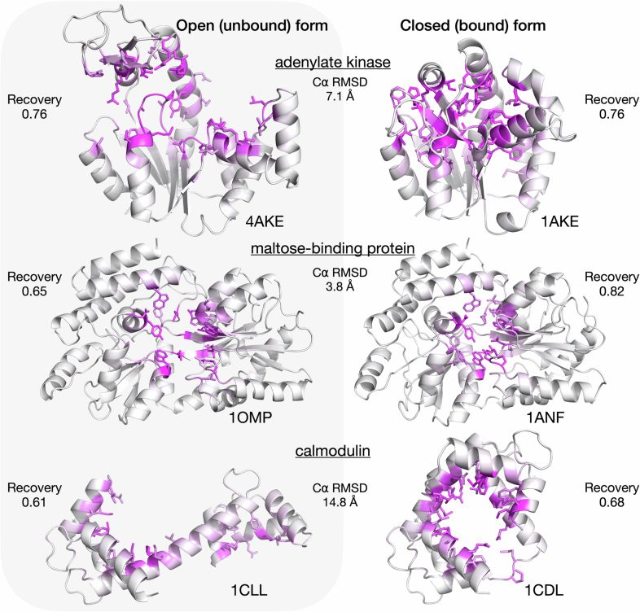
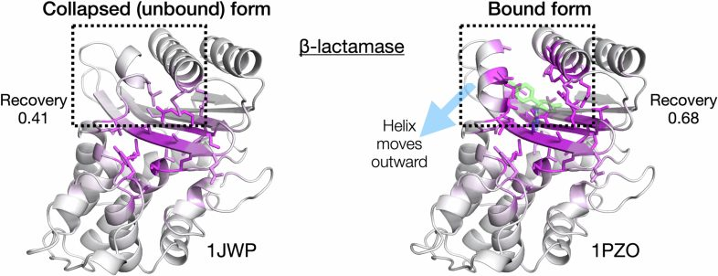
Contributions of bait residues correlate with ligand hydrophobicity
Because AF2BIND uses a linear combination of AF2 pair features, the contribution of each of the 20 bait amino acids to the binding-residue prediction can be uniquely attributed (Fig. 2b). The ease of this assignment is a distinct advantage of the logistic regression model. For each of the ~2,000 structures from our dataset, we analyzed the propensity of the bait amino acids to contribute to P(bind) as a function of polarity (fraction of carbon atoms) of the true ligand from the crystal structure (Fig. 5). We found that certain bait residue combinations were negatively and positively correlated with ligand hydrophobicity (Fig. 5a,b, respectively). This activation analysis represents a possible small-molecule ligand as a linear combination of the 20 amino acids (for example, Extended Data Fig. 2). As illustrative examples, hydrophobic bait amino acids predominately contribute to the binding-site prediction of the supernatant protein factor (PDB 4OMJ), which binds the hydrophobic terpenoid, 2,3-oxidosqualene (Fig. 5c). On the other hand, hydrophilic bait amino acids are the main contributors to binding-site prediction for the 4-diphosphocytidyl-2C-methyl-D-erythritol kinase (PDB 2V2Z), which binds the polar substrate, 4-diphosphocytidyl-2C-methyl-D-erythritol (Fig. 5d). Thus, bait activation analysis offers a chemical fingerprint by which to further classify the nature of a predicted small-molecule binding site.
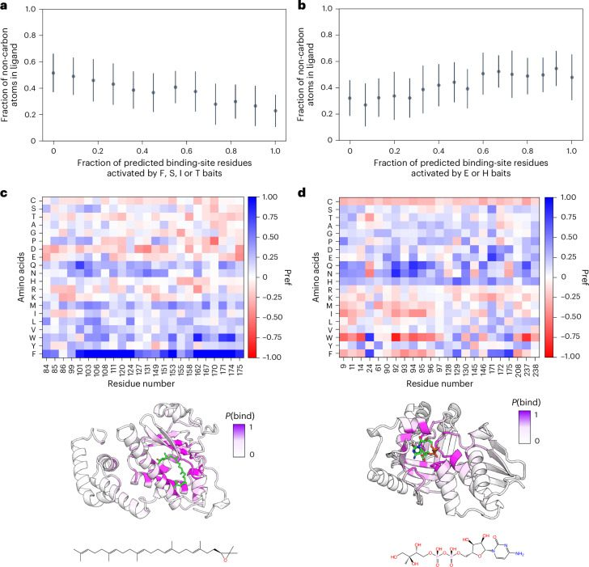
Correlations in features
To predict P(bind) for a target residue, AF2BIND takes as input 5,120 pair features from AF2 (20 baits × 256 pair features). We analyzed the 5,120 features using principal-component analysis (PCA) and found that the top 1,020 of 5,120 principal components were necessary to account for 95% of the variance in the data (Supplementary Data Fig. 1). Thus, many features in the pair representation of AF2 are correlated and could perhaps be dropped without a noticeable loss in prediction accuracy; however, because the logistic regression computation is quite fast, we choose to keep all features in the final model instead of only the first 1,020 principal components.
We next wondered if all 20 bait residues were necessary for the predictions. We performed PCA on the pair representation between each target protein residue and the 20 bait residues (Supplementary Fig. 2). We used the 20-bait dimension of the pair features and stacked the 256-pair-embedding dimension as samples. PCA on this matrix gives 20 principal components as linear combinations of the bait features. We found 17 of 20 principal components were required to explain 95% of the variance, showing that most bait amino acids are indispensable for the predictions (Supplementary Fig. 2a). Composition analysis of the principal components provides insight into the dominant types of interactions used for AF2BIND predictions (Supplementary Fig. 2b–d). The first principal component (21.9% of explained variance) shows globally correlated baits with top baits spanning a variety of size, aromaticity and polarity. The dominant baits of the second principal component (12.67% of explained variance) show polar groups (N, Q, S and T) anti-correlated with apolar groups (W, F, I and M). The third component (9.47% of explained variance) has major contributions from charged residues, with opposite charges showing strong anti-correlation (E and D versus R and K). Thus, the baits seem to be used according to their biochemically similar features, with polar versus apolar features accounting for most variance.
In a complementary analysis of bait redundancy, we analyzed the bait activations themselves (for each target residue there are 20 bait activations). We performed a Spearman correlation analysis across all bait activations in the test set (a total of n = 21,322 residues across 67 proteins) (Supplementary Fig. 2e). While no pair of baits show a Spearman correlation higher than 0.6, the Spearman matrix shows that biochemically similar amino acids activate together: hydrophobic baits, similarly charged bait and neutral polar baits. Only the activation of the Cys bait shows no correlation with activation of any other bait residue.
Prediction of binding sites across the human proteome
We used AF2BIND to predict binding sites across the AF2-predicted human proteome21. In the AF2 structural database, each protein is predicted as a single chain, despite many being part of higher-order biological assemblies. While some interchain binding sites will be missed due to modeling single chains only, single-chain AF2 predictions often resemble the structure of the chain within the (missing) assembly, so these single-chain structures can still be biologically relevant. We trimmed low-confidence (low pLDDT) regions of the AF2-predicted chains and split larger multi-domain chains into pairs of contacting domains (Methods). AF2BIND predictions of small-molecule binding residues (above the classifier threshold of 0.28) were clustered into multi-residue (>4 residues) binding sites based on spatial proximity (Methods). AF2BIND predicts 20,302 binding sites within 13,686 proteins in the human proteome (Fig. 6). Of these sites, 15,755 have no overlap with any ligand-binding residues assigned by AlphaFill4 (6 Å heavy atom distance), which uses bound small molecules from homologous PDB structures to ‘fill in’ unliganded pockets. Thus, many AF2BIND-predicted sites are not trivially assigned by homology (Fig. 6b).
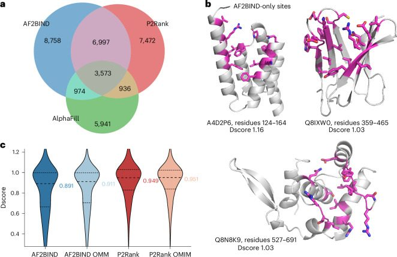
We compared AF2BIND with a popular binding-site prediction tool, P2Rank5, a random forest classifier of probe points decorated around a protein surface. P2Rank uses a clustering algorithm to assign a pocket probability to densely clustered solvent-accessible surface points, and the nearest residues to the clustered points become pocket residues. We compared binding-site residues assigned by AF2BIND with binding-site residues assigned by P2Rank (Fig. 6a). For sites assigned with greater than 5% confidence/probability (Methods), AF2BIND predicts 9,732 sites distinct from P2Rank, including over 4,900 proteins where P2Rank does not predict any site. Conversely, P2Rank predicts 8,408 sites distinct from AF2BIND, including over 700 proteins where AF2BIND does not predict any site. When combined, AF2BIND and P2Rank predict nearly 29,000 unique sites within 15,026 proteins, with nearly 11,000 sites shared between the two methods.
Quality of predicted sites
We compared the quality of pockets identified by AF2BIND and P2Rank across the AF2-predicted human proteome. We used Dscore from SiteMap33, which is a weighted sum of the size, enclosure, and hydrophilicity of the site, to assess druggability of the predicted sites. Both AF2BIND and P2Rank predict sites with median Dscore above a commonly used druggability threshold33 (0.83), indicating that both methods identify promising sites for drug discovery (Fig. 6c). On average, sites from AF2BIND exhibited less enclosure and higher exposure than P2Rank sites, and both methods predicted sites with similar ratios of H-bond donors to acceptors (Supplementary Fig. 3). Predictions grouped by Evolutionary Classification of Protein Domains (ECOD)34,35 homology group (H-group) showed some of the most druggable classes of proteins (Supplementary Fig. 4), as well as the relative druggability of the most frequently occurring H-groups with predicted sites (Supplementary Fig. 5).
We computed two ranking schemes for AF2BIND-predicted sites. The first is a cumulative density function over z-scores of the mean P(bind) of each residue in the site (Methods). The second is a simple sum of the top N residues in the site by P(bind) divided by N. We found that N = 23 (accounting for 75% of all binding sites in training) gives the best Spearman correlation with P2Rank probability and with Dscore (if a site has less than 23 residues, we still divide by 23) (Supplementary Figs. 6 and 7). Indeed, this simple metric has a higher Spearman correlation with Dscore (0.40) than does P2Rank probability (0.31) (Supplementary Fig. 6). This is perhaps not surprising, as most small molecules in the training set (640 of 947) obey Lipinski’s rule of 5, suggesting that P(bind) might correlate with druggability due to the slight bias in sites seen during training.
Morbid Map analysis
Finally, we compared AF2BIND and P2Rank predictions against disease-relevant proteins found in the Morbid Map database36. The distributions in Dscore of the predicted sites in Morbid Map proteins are similar (slightly higher) to those in the entire proteome (Fig. 6c and Supplementary Fig. 8). Of the ~5,700 proteins contained in Morbid Map, AF2BIND predicts small-molecule binding sites in 3,556 proteins, 527 of which have no site predicted by P2Rank. Indeed, 411 Morbid Map proteins with sites predicted by AF2BIND have no shared site with AlphaFill or P2Rank. Conversely, P2Rank predicts sites in 3,347 proteins, 318 of which are unique to P2Rank. Altogether, AF2BIND and P2Rank predicted binding sites in a shared set of 3,029 proteins and a total combined set of 3,874 proteins. Over 950 distinct binding sites were predicted by AF2BIND with no overlap with AlphaFill or P2Rank. These results underscore that AF2BIND is providing new information not already covered by pocket predictors or homology modeling, doing so in disease-relevant proteins.
AF2BIND can predict shallow sites
It is interesting to dissect where AF2BIND predictions diverge from P2Rank predictions. In general, P2Rank assigns sites that are predominantly recessed pockets (Supplementary Fig. 3). While AF2BIND also predicts binding residues in recessed pockets, predictions from AF2BIND that are missed by P2Rank are often shallower, more surface-exposed sites, sometimes without a noticeable pocket. Examination of some of these sites shows RNA-binding or peptide-binding functionality. For example, the microtubule binding subunit of dynactin (UniProt Q14203) contains a CAP-Gly domain that binds to the C terminus of peptides, including the zinc finger domain of ClipZn2 (PDB 2HQH) and the plus end of microtubules (Supplementary Fig. 9a). Because this site interacts predominantly with only three C-terminal residues in the peptide (as opposed to more extensive protein–peptide interactions seen for peptide binding), it contains some small-molecule binding character and is predicted with high confidence by AF2BIND. In another example, AF2BIND predicts a site within the protein telomerase (UniProt O60832) at a protein–RNA interface (PDB 8OUE; Supplementary Fig. 9b). Finally, prediction of a binding site within pituitary-specific positive transcription factor 1 (UniProt P28069) occurs at the diffuse protein–DNA interface (PDB 5WC9; Supplementary Fig. 9c). As the model was only trained to predict small-molecule binding sites, AF2BIND in these cases is predicting nucleic-acid- and peptide-binding sites that share some common features with small-molecule binding sites. The AF2 pair features that distinguish sites for these classes of ligands can be thought of as on a continuum; here, AF2BIND highlights some functional biopolymer binding sites that might indeed be ligandable by small molecules. Note that the logistic regression model was not trained to suppress recovery of peptide- or nucleic-acid binding sites, so it should be possible for AF2BIND to predict some of these sites as small-molecule binding to the extent that they share similar AF2 pairwise embeddings as small-molecule binding sites. Identification of sites such as these that involve other biomolecules and yet might be addressable by small-molecule ligands, using only single chains as input, could be particularly advantageous due to the prohibitive cost of enumerating all possible molecular bioassemblies. Indeed, AF2BIND does predict some sites of known protein–protein interactions where small-molecule inhibitors have been found to bind (for example, menin and MCL1), although it misses a liganded site in interleukin (IL)-2 with a very shallow groove (Supplementary Fig. 10).
Predicting allosteric versus orthosteric sites
We trained AF2BIND on a set of 1,897 single-chain proteins (<500 residues) that are diverse in sequence, structure and binding pockets. Most of these sites are orthosteric (functional sites where endogenous ligands bind), which mirrors the trend in the PDB overall. A literature analysis37 of allosteric small-molecule binding sites in the PDB found ~2,700 structures (approximately 1.4% of all deposited structures). Only 23 PDBs in our dataset (1.2%) overlapped with this allosteric set, tracking the background distribution of allosteric proteins in the PDB. Despite the underrepresentation in training, we assessed performance of AF2BIND on allosteric sites in the AF2BIND dataset. AF2BIND predicts sites in most of the (few) allosteric proteins in the training set, and it recovers sites in the two allosteric proteins in the test set (Supplementary Fig. 11a). AF2BIND is slightly less calibrated for allosteric proteins: the classifier threshold does not coincide with the miss rate as strongly as for orthosteric sites (Supplementary Fig. 11b versus Extended Data Fig. 5a), although the ROC AUC on the small allosteric set of proteins is still high (0.91).
We next sought to understand AF2BIND performance on allosteric sites without the bias that comes with using structures that have allosteric ligands already bound. To do this, we used a subset of AF2-predicted (ligand-free) human proteins with UniProt accessions in the allosteric list of PDB proteins, resulting in a total of 39 AF2-predicted structures. Of these, AF2BIND predicted two-thirds of the allosteric sites, showing that it can indeed identify these sites, even in AF2-predicted ligand-free structures (Supplementary Fig. 12a). A structural comparison of the AF2-predicted structures versus the corresponding structures in the PDB showed a wide range of RMSD differences (0.5–5 Å), which did not correlate with prediction success (Supplementary Fig. 12b). For example, in PARP14 macrodomain 2, an allosteric ligand bound in the crystal structure displaces a loop in the AF2-predicted structure (Supplementary Fig. 12c, inset, overall Cα RMSD 1.9 Å). Despite the loop occluding the pocket, AF2BIND successfully predicts this allosteric site using the AF2 structure as input. Despite this success, we do not expect AF2BIND to perform well in all cases for allosteric binding. Indeed, performance appreciably declines when the site is completely collapsed (cryptic), as in β-lactamase (Extended Data Fig. 10), suggesting room for improvement in future models.
AF2BIND predictions synergize with chemoproteomics
Emerging datasets from chemical proteomic studies have identified hundreds of small-molecule binding sites across diverse proteins in human cells. We sought to cross-reference predictions from AF2BIND and P2Rank against this body of data. Overlapping predictions from AF2BIND or P2Rank might provide impetus for subsequent, focused experimental efforts. Alternatively, discrepancies between experiment and prediction may illuminate areas for future model improvement. We used a proteome-wide cysteine profiling dataset38 from Cravatt and co-workers to find predicted binding sites nearby experimentally liganded cysteines. Using AF2-predicted single-chain structures, we considered a site as plausible for the Cys liganding event if a residue’s Cα atom was within 12 Å of the Cys sidechain (heavy atoms). Of 212 separately liganded tryptic peptides (featuring 271 cysteines), AF2BIND predicted binding sites near 78 of them (~1 in 3 success rate) (Supplementary Fig. 13). P2Rank predicted binding sites near 84 of them (~1 in 3 success rate). AF2BIND found nearby sites in 18 proteins that P2Rank missed, and P2Rank found nearby sites in 23 proteins that AF2BIND missed. Combined, AF2BIND and P2Rank predict sites near almost half (n = 102) of the liganded peptides. These results reinforce that the two methods can be used in concert to good effect. While encouraging, the results also suggest shortcomings in the modeling of current AF2-predicted structures (for example, the absence of binding partners or modeling of a higher-order oligomeric state) or deficiencies in the binding-site predictors themselves, for example with predicting cryptic sites that are not readily distinguishable in a predicted structure (no apparent pocket). Still, AF2BIND shows some promise despite these shortcomings; using only the single-chain AF2-predicted structure, it predicts a site in FOXA1 that, from the crystal structure, seems to be driven by a biomolecular complex with DNA (Supplementary Fig. 13c).
Discussion
Here, we showed that a deep neural network, AF2, trained on the task of single-chain protein structure prediction, has the surprising ability to discern small-molecule binding sites, without needing to provide a sterically or chemically compatible ligand. The pair representation of AF2 provides an effective embedding for the training of a dedicated logistic regression classifier, AF2BIND, which can accurately assign small-molecule binding labels to each residue in a target protein (66% recovery, 0.936 ROC AUC and 0.728 average precision). We used 20 individual-chain amino-acid ‘bait’ residues to effectively tease out a ligand-binding signal from the pair representation of AF2. An activation analysis of the bait residues, which are built from each type of amino acid, correlates with ligand hydrophobicity. This correlation suggests that bait-residue activations might, in future work, provide a useful representation for predicting ligand identity given the residues that comprise a binding site.
Because our main motivation was probing the inherent binding-site prediction capabilities of AF2, our logistic regression model is purposefully simple to maximize interpretability; and there likely remains some room for model improvement. (On this note, we provide code for using composite models, for example AF2 pair + ESM1-IF, which maximize metrics such as ROC AUC and average precision). The theoretical ceiling for recovery in the binding-site prediction task is unclear because the true ligand is not used for the prediction, so the ceiling is likely well below 100% recovery1. Simply clustering the predictions by proximity to neighboring residues with high P(bind) could increase performance. Indeed, we clustered predictions across the AF2-predicted human proteome and found that AF2BIND predicts many de novo sites not trivially determined through homology modeling with AlphaFill or predicted by a popular pocket predictor, P2Rank.
While AF2BIND finds many of the same sites as pocket finders like P2Rank, it also detects sites that are missed by such pocket finders, including in hundreds of disease-relevant proteins from Morbid Map. These novel sites are often shallow, more diffuse and are possibly locations of protein–protein, protein–peptide or protein–nucleic-acid interfaces. Nevertheless, they likely have some small-molecule binding character, as AF2BIND was trained only on small-molecule binding sites (proteins with peptides and nucleic acids as ligands were explicitly filtered from the training set). Many of the sites predicted by AF2BIND are druggable, as indicated by SiteMap’s Dscore, and we provide a database of combined predictions across the human proteome from AF2BIND and P2Rank.
AF2BIND is easy to install, use and retrain, for which we provide usable inference and training code. AF2BIND can be readily applied to other proteomes or even designed proteins, as there is no reliance on template matching or homology modeling. Our dataset split was rigorously curated with the goal to maximize generalization to unseen sites, and we provide this split to democratize training of other model architectures. Like other work1,5,7, we found that it was important to borrow labels from highly similar sites in homologous proteins for creating our dataset, as any given crystal structure might not have all ligandable sites occupied.
We found that embeddings from pretrained neural networks performed generally well as input features for binding-site prediction. A logistic regression model trained using embeddings from ESM2 was able to achieve over 50% binding-residue recovery from sequence alone (Fig. 3a), which underscores just how much binding sites are conserved across evolution. At the opposite end of the spectrum, embeddings from a structure-conditioned sequence-design model, ESM1-IF, were able to achieve an impressive binding-site recovery of almost 64%. ESM1-IF does not have access to the protein sequence when it produces its embeddings (although as a sequence-design model its sequence recovery is quite high, especially in core residues), which suggests that a protein’s backbone coordinates are sufficient to encode positions of binding-site residues. The AF2 pair features, which embed both sequence and structural features of the target protein, were the best-performing single embedding that we tested (66% recovery).
To use AF2 pair features, we provided ‘bait residues’ along with the target protein’s sequence and backbone coordinates to AF2 to tease out the binding signal. We interpret the bait residues as a means for AF2 to ‘relieve frustration’ of binding sites, although the physical distance between any bait residue with a binding-site residue (after a single pass through the model) does not necessarily correlate with the strength of P(bind). There are likely limitations to using only 20 amino-acid baits, as small molecules are chemically diverse and comprised of a rich set of functional groups. Future work might replace the 20 bait residues with a diverse set of chemical probes39 for use with an open-source co-structure prediction model40–45 to make a next-generation binding-site predictor.
From where does model performance derive? During pretraining, the networks build a meaningful representation of the input data to minimize their bespoke loss functions. ESM2 encodes sequence and ESM1-IF encodes structure by minimizing cross-entropy loss for token prediction. AF2 encodes both sequence and structure through cross-entropy- and structure-based loss terms (for example, frame-aligned point error). We show in this work that the same features used to predict masked tokens or amino acid rotations/translations (presumably encodings of sequence conservation, covariation, solvent-accessible surface area, electrostatic environment, etc.) are transferable to binding-site prediction. AF2BIND is evidence that neural network embeddings which encode intra-protein interactions are applicable to predicting drug–protein interactions. This finding could inspire future efforts to use protein–protein contacts to supplement other tasks involving protein–ligand interactions, such as ligand-conditioned design of protein sequence18,46. The ready transferability might be key to unlocking state-of-the-art models used for drug discovery, where non-redundant data are sparse.
While recent protein structure predictors like RoseTTAFold All Atom45, Boltz-1 40 and AlphaFold3 41 can handle small molecules, AF2BIND can predict ligandable sites within a protein without knowledge of any particular ligand. AF2BIND predictions can thus synergize with co-structure predictors by ensuring sites with high cluster scores become pocket-conditioned during co-structure prediction. For example, AF2BIND may guide docking via maximizing ligand contacts with residues that have high P(bind). Furthermore, such co-structure predictors can be directly used to train advanced ‘AF2BIND-like’ models, by replacing or augmenting the bait amino acids with a basis set of diverse small-molecule fragments for co-folding. Such fragments would cover a larger swath of chemical space found in drugs.
Because P(bind) is not trivially correlated with amino-acid conservation, AF2BIND should be useful in predicting small-molecule binding sites that confer specificity of binding. Binding to allosteric, non-conserved sites can limit off-target effects related to the high conservation of pockets shared across paralogs. Indeed, AF2BIND was able to predict about two-thirds of known allosteric sites for a set of human proteins using only AF2-predicted structures as input (Supplementary Fig. 12a), suggesting that it has potential to uncover new pockets that can drive discovery of allosteric inhibitors. Additionally, binding-site predictors like AF2BIND can synergize with emerging datasets from chemical proteomics, but gaps between experiment and prediction also emphasize the need for modeling of biomolecular complexes and for more training data, especially with respect to cryptic sites.
The ability to accurately predict de novo binding sites could enable binding-site identification across large swaths of newly predicted protein structures, as we have shown for the AF2-predicted human proteome. Homology modeling approaches such as AlphaFill rely on ‘filling’ predicted proteins with ligands taken from crystal structures of homologous proteins2–4,47. While useful, these approaches are not applicable to new folds or unliganded sites in the PDB. Other prediction approaches either rely on achieving the correct chemical compatibility of the ligand to identify a site27,48 (blind docking) or are prone to predicting deep pockets at the expense of missing shallower sites5,8. The myriad unliganded structures now available in AlphaFoldDB49 and ESM Metagenomic Atlas50, combined with the predictive power of AF2BIND, offer tantalizing opportunities to discover novel binding sites across the tree of life.
Methods
Extracting AF2 features for binding-residue prediction
AF2 is trained to output a protein structure given an input protein sequence. Along with the sequence, AF2 can take as optional input a multiple sequence alignment (MSA) and structural template. These inputs get transformed internally by the model through several attention layers to a ‘single’ and a ‘pair’ representation, so-called because there is an embedding for each single residue or each pair of residues of the input sequence, respectively. The residue identity of each amino acid, as well as its relative position within the input sequence, affect its precise numerical embedding by AF2, which uses the embeddings within the structure module to compute the three-dimensional coordinates of the protein. We tested the usefulness of the single and pair representation of AF2 for binding-residue prediction. To bias the single and pair features to the task of ligand binding, we append 20 disjoint (by a large residue-index offset of 50) amino acids to the sequence of a target protein. These 20 amino acids (one for each of the canonical residue types) act as ‘bait’ ligands for AF2. We use as a template the structure of the target protein (no template was provided for the 20 ‘bait’ amino acids) and found that ablating the sidechain dihedral information beyond the Cβ atom was most effective for downstream binding predictions. Because we use a template of the target protein, we do not need to use an MSA, as AF2 will output a structure that is practically identical to the input template if the sequence of the template and the input sequence are the same51. AF2BIND uses the pair representation between a residue j in the target protein and each of the 20 bait amino acids (Fig. 2a). The concatenated pair representations (dimensionality of 5,120 or 20 × 2 × 128 features) are input to AF2BIND for training the logistic regression model. AF2BIND is trained to predict if a given residue in the target protein is involved in binding a ligand; we call the sigmoidal activation P(bind) for probability of binding.
Runtime and computational requirements
AF2BIND uses a single pass through the AF2 model to generate embeddings and does not use MSA. A binding-site prediction by AF2BIND will therefore in general be faster than a typical prediction of a structure using AF2, as no recycles or MSA-generation are necessary. A typical computation takes around 40 s on a single T4 GPU for proteins between 100 to 300 amino acids.
Analysis of large proteins
For large proteins, we observed a dilution of P(bind) relative to smaller proteins (<300 residues): the overall magnitude—but not necessarily the ordering—of P(bind) was reduced as the size of the protein grew. This dilution can be problematic when determining a single classifier threshold for P(bind) to be used during inference, so we developed an algorithm that divides protein structures into smaller subgraphs. For AF2-predicted structures, the algorithm begins by identifying and removing stretches of residues with low pLDDT scores (pLDDT < 50), starting from both the N and C termini until residues with higher confidence (pLDDT > 50) are reached (Supplementary Fig. 14). Additionally, any internal contiguous stretch of seven or more residues with a maximum pLDDT < 50 is deleted. If the structure contains fewer than 300 residues (the average protein length in the training set), the entire structure is used as input to AF2BIND. For larger structures (≥300 residues), the algorithm constructs a graph where nodes represent domains (the definitions of which, for our analysis of the human proteome, we extract from ECOD34), and edges are formed between domains that have at least five residues within 5 Å of each other. The algorithm then identifies (1) all unique subgraphs, with fewer than 300 residues; (2) combinations of two contacting domains that together exceed 300 residues; and (3) individual domains larger than 300 residues.
When running AF2BIND on a single domain extracted from a larger structure, P(bind) of residues that are in contact with other domains (that is, any non-hydrogen atom within 5 Å) is zeroed in the output structure. This process generates a set of PDBs on which AF2BIND will be run. The final output prediction is made by taking the maximum P(bind) for each residue across all predictions from the set. This approach helps overcome issues of signal dilution by splitting large structures into smaller ones, exemplified, for example, by the ATP binding cassette (Supplementary Fig. 15).
Binding-site identification using AF2BIND on the human proteome
We used a density-based clustering method to detect binding sites (clusters of predicted binding residues) from AF2BIND predictions. First, we ran AF2BIND (seed = 0 model; Supplementary Fig. 16) on single domains and pairs of contacting domains as described above, using domains defined by ECOD (Supplementary Fig. 14). Next, we used the maximum P(bind) of each residue from each split prediction and the untrimmed AF2-predicted structure to perform clustering. Residues in the full AF2-predicted structure with fractional solvent-accessible surface area (SASA) < 0.03 had their P(bind) changed to zero, as these buried residues are likely not participating in binding sites, and P(bind) > 0 is likely artifactual due to splitting of domains. We computed SASA using the Python implementation of the program freesasa52. Fractional SASA was computed as a residue’s SASA divided by that residue’s SASA as part of a Gly-X-Gly tripeptide in an all-β configuration. All residues with P(bind) greater than the MCC/F1-determined threshold of 0.28 were clustered using the scikit-learn implementation of the DBSCAN clustering algorithm (with hyperparameters eps = 6.0, min_samples = 3 and metric = ’precomputed’). We used as a custom distance metric the minimum Euclidean distance between any pair of heavy atoms (sidechain or Cα) of a pair of residues. An atom-pair distance of ≤6 Å was used to define inclusion in a cluster (eps = 6.0). Any clusters with more than 50 residues were broken into smaller (~40 residue) subclusters using the k-means algorithm. Binding sites with fewer than five residues were discarded.
Binding-site ranking formula
We ranked binding sites using a simple ‘cluster_rank’ formula of for n = 13, 15, 18 and 23. These values of n cover the following percentiles of binding sites in our dataset respectively: 25%, 33%, 50% and 75%. This metric is not strictly the average P(bind) of the cluster, as clusters with fewer than n residues are still divided by n. The function penalizes small clusters and does not penalize larger clusters where additional residues with less confident P(bind) values could decrease the average. We found that the n = 23 has the highest Spearman correlation with P2Rank probability and SiteMap Dscore. We deposit the raw P(bind) values in the supplementary csv file for each predicted binding site in the human proteome to facilitate calculation of other custom scoring functions.
We also computed a cumulative density function (CDF) on the z-score of the per-binding-site means of P(bind). This metric is justified because we found that the average P(bind) of per-ligand binding residues did not vary strongly in the range of 10 to 40 binding-site residues in our dataset. The means of P(bind) are approximately normally distributed in our dataset, so the CDF of this distribution transforms to an approximately uniform distribution. For the z-score, we computed the mean (0.56) and s.d. (0.18) of P(bind) of true binding residues for each ligand in proteins in our dataset. We used this mean and s.d. to compute CDF z-scores for each predicted binding site in the human proteome.
SiteMap computations
We used Schrodinger’s SiteMap program with default parameters to compute Dscore and accompanying metrics for each AF2BIND- and P2Rank-predicted binding site in the human proteome. For each predicted binding site, we used the -siteasl option in SiteMap followed by the list of binding-site residues to focus SiteMap’s calculation to the appropriate region of the protein. SiteMap may output several smaller subsites for a given list of binding residues. To create a composite site metric, we averaged SiteMap metrics computed for each subsite, weighted by relative subsite volume. (The final ‘volume’ metric of the composite sight was taken as the sum of each subsite). We ignored ‘compact site’ predictions by SiteMap, which break down subsites into further subsites. For assessment of SiteMap Dscore across protein classes, we used ECOD homology groups precomputed for AF2-predicted proteins in the human proteome34,35. We included SiteMap metrics in all predicted sites across the human proteome compiled in the supplementary csv file.
Principal-component analysis of AF2 pair features
We performed two PCA analyses using 67 proteins of the AF2BIND test set. We created AF2 pair embeddings for 21,322 residues in the 67 proteins. For the bait analysis, we stacked embeddings for each bait residue (20 baits × 256 pair feature dimensions) and performed PCA on the 20-bait dimension. For the input-feature analysis, we flattened and stacked the 20 × 256 pair features for each of the 21,322 residues and performed PCA on the 5,120-dimensional features. PCA was implemented using the scikit-learn Python package.
Computation of amino-acid character for ligands in PDB
We downloaded a list of all HETATM ligands in the PDB from Research Collaboratory for Structural Bioinformatics. We extracted SMILES strings from this list and used RDKit to convert each to Morgan fingerprints (total of 40,258 ligands). We next created a basis set of Morgan fingerprints for the 20 canonical amino acids, including both charged and neutral protonation states for Asp, Glu, Arg and Lys. For each ligand in the PDB, we compared nonzero indices of its Morgan fingerprints with those from the amino-acid basis set. The fraction of each ligand covered by amino acids was defined as the number of shared nonzero indices divided by the total number of nonzero indices in the ligand.
Prediction of allosteric sites
We downloaded a list of allosteric proteins from the Allosteric Site Database37 containing PDB accession codes, UniProt IDs, allosteric residue names and chain IDs (ASD_Release_202309_AS.tar.gz, release v.5.1; https://mdl.shsmu.edu.cn/ASD/module/mainpage/mainpage.jsp). Of this list of 3,102 proteins, we selected human proteins with ‘modulator_class’ of ‘Lig’ to focus on small-molecule sites (206 proteins). We further filtered by proteins that were smaller than 300 amino acids in length (in the crystal structure) and had only one chain contributing to the allosteric binding site (34 total proteins and 39 total sites). True binding residues were selected as those within 5 Å heavy atom distance of any heavy atom in the allosteric ligand. We mapped these residues to those in the AF2-predicted structures using ProDy53 matchChains and computed Cα RMSD from the superposition of matched residues. Using the AF2-predicted structure as input, an allosteric site was considered predicted by AF2BIND if three or more true binding residues had P(bind) > 0.28.
Prediction of binding sites in apo vs holo proteins
We used a list of corresponding apo and holo PDB files from Binding MOAD32 and filtered for single-chain proteins. We used the matchChains function of ProDy53 to superimpose apo onto holo proteins. For apo–holo pairs with Cα RMSD > 1.0 Å and < 3.0 Å, we grouped by Binding MOAD ‘family’ and took as a representative of each group the apo–holo pair with largest RMSD. We then ran AF2BIND on the representative pairs of proteins, extracting true binding residues from the holo protein (heavy atoms within 5 Å heavy atom distance of ligand).
Prediction of binding sites proximal to liganded Cys residues
We used the dataset from Njomen et al.38 to extract liganded Cys residues on individual tryptic peptides (271 Cys residues on 212 tryptic peptides), using peptides with Cys residue number less than 1,400 (the length of the F1 fragment of AF2-predicted structures). For each Cys, we cross-referenced the predicted sites from AF2BIND and P2Rank for that AF2-predicted structure and determined if any Cα atom was within 12 Å of the Cys sidechain heavy atoms. The binding site was considered a match if one or more residues were within this capture radius. We provide csv files with the matched sites for both AF2BIND (78 tryptic peptides) and P2Rank (84 tryptic peptides) in the supplement.
P2Rank calculations of human proteome
We ran P2Rank on the same pLDDT-trimmed AF2 (v.4) structures used for AF2BIND predictions, except we did not split these structures by domains. We downloaded P2Rank from GitHub (https://github.com/rdk/P2Rank) and used default settings (prank predict). Binding residues and pocket probabilities were extracted from the output ‘predictions.csv’ files. An AF2BIND binding site was considered to be overlapping with a P2Rank binding site if the sites shared one or more residues.
Comparison of AF2BIND predictions with AlphaFill
AlphaFill cif files of the human proteome were downloaded from https://alphafill.eu/download. Coordinates of all HETATM lines in the cif files were parsed, and residues with any heavy atom within 6 Å of a HETATM coordinate were used as an AlphaFill binding site. An AF2BIND binding site (cluster) was considered to be overlapping with an AlphaFill binding site if the sites shared one or more residues.
Cross-referencing binding-site predictions against Morbid Map proteins
We accessed Morbid Map (morbidmap.txt) from Online Mendelian Inheritance in Man (OMIM; https://omim.org/downloads/)36. UniProt IDs of Morbid Map genes were found using the UniProt server’s ID mapping module and merged with UniProt IDs from AF2BIND and P2Rank predictions of the human proteome to identify Morbid Map proteins with predicted binding sites.
Dataset
We trained AF2BIND on single-chain protein–ligand complexes filtered from all crystal structures in the protein databank (PDB) accessed in March 2023. The PDB was first filtered by resolution <3.6 Å, R factor <0.35, chain length (between 40 and 500 residues), monomeric oligomerization state, and absence of RNA or DNA polymers. The single-chain proteins needed to have a small-molecule ligand bound with buried surface area >100 Å2. The ligand needed to contain between 10 and 200 heavy atoms, and peptides were excluded. Proteins contacting a ligand via more than one chain in the asymmetric unit or crystal lattice were excluded. We removed ligands that were covalently bound (except for porphyrins) or listed as common crystallization additives. For obtaining binding-residue labels to train AF2BIND, we consider only ligands with real-space correlation coefficients >0.85, real-space R value < 0.25 and average occupancy >0.9. Approximately 14,000 PDB files (15,000 chains) remained, containing roughly 18,000 ligands. We clustered these using mmseqs2 54 by 30% sequence identity and 80% coverage (1,280 clusters). We also clustered the proteins structurally using foldseek55 and combined the foldseek and mmseqs2 clusters. To create our final dataset for training, we extracted up to three proteins from each cluster, ranked by number of residues in the binding pocket (max), diffraction resolution (min) and R-free of the structure (min). Within a cluster, preference was also given to proteins with different ligand binding-site locations. The resulting dataset consisted of 1,897 proteins and 2,708 ligands (987 unique ligand residue names). Binding residues were determined based on a maximum heavy-atom distance of 5 Å between ligand and residue. We subsequently augmented binding-residue labels of these proteins using the 15,000 chains if a chain had TM-score >0.8 and >90% sequence identity in the binding residues.
Training
AF2BIND is a logistic regression model trained for 320 epochs and a batch size of 12 proteins, using the ADAM optimizer with learning rate of 1 × 10−4. The input features were normalized by the mean and s.d. of the training set. To down-weight redundancy, each sample was compared to all other samples in the training set and was weighted by 1/number of proteins > 0.5 TM score. To prevent overfitting, we scanned L2 regularization weights and selected a weight (0.03) where the average train and validation recovery were about the same (Extended Data Fig. 3). This was performed across ten cross-validation splits. We tested the performance of the final weights on a test set of 67 protein–small-molecule complexes (Fig. 3b,c). In initial stages of training the model (before we filtered for data quality such as real-space correlation coefficient of the ligand), we looked at structures that were consistently predicted with low recovery and found that the quality of the crystallographic data for these binding sites was poor. Thus, AF2BIND might also be used to determine whether a ligand placement might be spuriously modeled into experimentally determined structures.
Representations
For all representations evaluated, we used the default representations provided by ESM2-3B, ESM1-IF and AlphaFold2, which are extracted from the final layer before the prediction task. When combining representations, as in (Fig. 3a), we concatenate the representations and train a new model.
Assessment metric
For comparing performance of different representations, we adopt a metric often used for assessing contact accuracy in proteins56. In short, the predictions are sorted by most to least confident, and the fraction of the top n predictions are evaluated, where n is the number of expected correct labels. The advantage of this approach is that it allows for comparisons of methods where the confidence metrics may be in different ranges or not fully calibrated (no classifier threshold is used). We adopt this metric for our binding-site recovery evaluation in (Fig. 3a).
Robust splitting of training, validation and test
As our goal was to develop a method that can generalize to unseen folds, we took special care to make sure there was no structural overlap between training, validation and test set. This was achieved by creating 11 independent sets of about 20 proteins each. We computed all-by-all TM scores for the 2,000 proteins in the dataset. The proteins were sorted from least similar to most similar by TM score57 to all other proteins in the set. The proteins were then assigned one by one to each of the 11 sets. The 11th set was further modified to include the following PDB chains: 4lbs_A, 7xn9_A, 4n03_A, 3hlg_A, 7ruh_A. We wanted to exclude these from training for detailed analysis later. At each step, we verified there was no overlap to any of the other proteins already assigned in each set. Proteins were deemed overlapping if their TM score > 0.5, or they shared any ECOD (topology level)35, CATH (at topology)58, SCOP2B (superfamilies level)59, PFAM60 or InterPro annotation61. The latter three were extracted from the SIFTS database62. We also extracted binding-site residues from each protein and used TM-align to compute an all-by-all TM score for each pair of pockets in the dataset. We used the harmonic mean of the two TM scores computed for each pair and excluded proteins from test that had similar pockets (harmonic mean of TM score > 0.6) to any in train. After the initial split, the last bin was reserved as the test set. The remaining ten sets were used to create ten cross-validation sets, where nine sets were used for training and one set was used for validation. For each cross-validation assignment, proteins that were excluded from the initial split were added back into each train/validation/test set if they were non-redundant and shared similarity within the set but not between sets. A protein was deemed redundant if TM score > 0.8 and more than 60% of binding sites overlapped. After enrichment, each cross-validation set had on average 600 proteins for train, 30 for validation and 70 for test. The full set can be downloaded at github.com/sokrypton/AF2BIND.
Peer review
Footnotes
Contributor Information
Nicholas F. Polizzi, Email: NicholasF_Polizzi@DFCI.harvard.edu
References
Associated Data
Supplementary Materials
Data Availability Statement
The AF2BIND training dataset of labels and predictions can be accessed on GitHub at https://github.com/sokrypton/AF2BIND and Zenodo at 10.5281/zenodo.17646944 63. Output files (csv and pkl) of annotated AF2BIND and P2Rank predictions of binding sites across the human proteome can be found via Zenodo at 10.5281/zenodo.17683379 64. An interactive database of AF2BIND predictions for the human proteome can be accessed at af2bind.solab.org, https://github.com/sokrypton/af2bind or https://gpubio.xyz/humanproteome.
A Google Colab notebook to run AF2BIND for binding-site prediction and activation analysis can be found at https://colab.research.google.com/github/sokrypton/AF2BIND/blob/main/AF2BIND.ipynb.
For predictions of proteins with greater than 300 amino acids, we recommend using the domain-parsing algorithm found at https://colab.research.google.com/github/sokrypton/af2bind/blob/main/af2bind_large_pdb.ipynb.
The code can also be accessed at Zenodo (10.5281/zenodo.17646944)63.
Code for analysis of AF2BIND and P2Rank predictions on the human proteome and Cravatt chemoproteomics dataset can be accessed at Zenodo (10.5281/zenodo.17683379)64.